| The Crafoord Prize | |
|---|---|
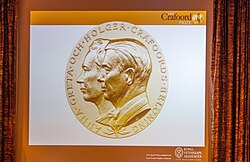 | |
| Awarded for | astronomy and mathematics; biosciences; geosciences; polyarthritis research (in four-year rotation) |
| Country | Sweden |
| Presented by | Royal Swedish Academy of Sciences |
| Reward | 8,000,000 Swedish kronor |
| First award | 1982 |
| Website | crafoordprize |
{kind=link}
The Crafoord Prize (Swedish: Crafoordpriset) is an annual science prize established in 1980 by Holger Crafoord, a Swedish industrialist, and his wife Anna-Greta Crafoord following a donation to the Royal Swedish Academy of Sciences.[1] It is awarded jointly by the academy and the Crafoord Foundation in Lund, with the former selecting the laureates.[2] The Prize is awarded in four categories: mathematics and astronomy, geosciences, biosciences (with an emphasis on ecology) and polyarthritis,[1] the final one because Holger suffered from severe rheumatoid arthritis in his later years.[3]
The disciplines for which the Crafoord Prize is awarded are chosen so as to complement the Nobel Prizes.[2] Only one award is given each year, according to a rotating scheme – astronomy and mathematics, then polyarthritis, geosciences and biosciences.[1] Since 2012, the prizes in astronomy and mathematics are separate and awarded at the same time; prior to this, the disciplines alternated every cycle.[2] The Crafoord Prize in polyarthritis was previously only awarded when a special committee decided that substantial progress in the field had been made.[2]
The recipient of the Crafoord Prize is announced every year in mid-January and the prize is presented in April or May on "Crafoord Days",[1] by a member of the Monarchy of Sweden. As of 2026, the prize money is 8,000,000 Swedish kronor (US$886,000).[1]
The Prize is usually awarded to one recipient, but there can be as many as three.[2] The inaugural laureates, Vladimir Arnold and Louis Nirenberg, were awarded the prize in 1982 for their work in the field of non-linear differential equations. Since then, the winners of the Prize have predominantly been men. The first woman to be awarded the Prize was astronomer Andrea Ghez in 2012.
Laureates
| Year | Category | Image | Laureate(s) | Rationale | Ref. |
|---|---|---|---|---|---|
| 1982 | Mathematics | 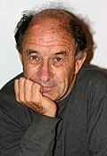 |
Vladimir Arnold | “for their outstanding achievements in the theory of non-linear differential equations” | [4] [5] |
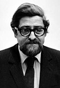 |
Louis Nirenberg | ||||
| 1983 | Geosciences | 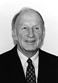 |
Edward Norton Lorenz | “for their fundamental contributions to the field of geophysical hydrodynamics, which in a unique way have contributed to a deeper understanding of the large-scale motions of the atmosphere and the sea” | [4] [6] |
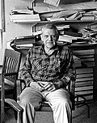 |
Henry Stommel | ||||
| 1984 | Biosciences | 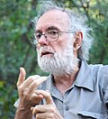 |
Daniel H. Janzen | “for his imaginative and stimulating studies on co-evolution which have inspired many researchers to further work in this field” | [4] [7] |
| 1985 | Astronomy | 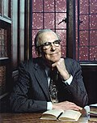 |
Lyman Spitzer | “for his fundamental pioneering studies of practically every aspect of the interstellar medium, culminating in the results obtained using the Copernicus satellite” | [4] [8] |
| 1986 | Geosciences | 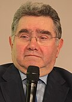 |
Claude Allègre | “for their pioneering studies of isotope geochemical relations and the geological interpretations that these results permit” | [4] [9] |
| — | Gerald J. Wasserburg | ||||
| 1987 | Biosciences | — | Eugene Odum | “for their pioneering contributions within the field of ecosystem ecology” | [4] [10] |
| — | Howard T. Odum | ||||
| 1988 | Mathematics | 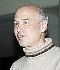 |
Pierre Deligne | “for their fundamental research in algebraic geometry” | [4] [11] |
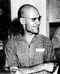 |
Alexander Grothendieck[a] | ||||
| 1989 | Geosciences | 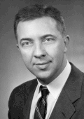 |
James Van Allen | “for his pioneering exploration of space, in particular the discovery of the energetic particles trapped in the geomagnetic field which forms the radiation belts - the Van Allen belts - around the planet Earth” | [4] [12] |
| 1990 | Biosciences | 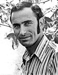 |
Paul R. Ehrlich | “for his research on the dynamics and genetics of fragmented populations and the importance of the distribution pattern for their survival probabilities” | [4] [13] [14] |
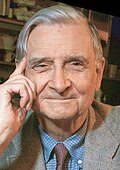 |
E. O. Wilson | “for the theory of island biogeography and other research on species diversity and community dynamics on islands and in other habitats with differing degrees of isolation” | |||
| 1991 | Astronomy | 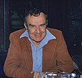 |
Allan Sandage | “for his very important contributions to the study of galaxies, their populations of stars, clusters and nebulae, their evolution, the velocity-distance relation (or Hubble relation), and its evolution over time” | [4] [15] |
| 1992 | Geosciences | — | Adolf Seilacher | “for his innovative research concerning the evolution of life in interaction with the environment as documented in the geological record” | [4] [16] |
| 1993 | Biosciences | — | W. D. Hamilton | “for his theories concerning kin selection and genetic relationship as a prerequisite for the evolution of altruistic behavior” | [4] [17] |
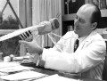 |
Seymour Benzer | “for his pioneering genetical and neurophysiological studies on behavioural mutants in the fruit fly, Drosophila melanogaster” | |||
| 1994 | Mathematics | 
|
Simon Donaldson | "for his fundamental investigations in four-dimensional geometry through application of instantos in particular his new discovery of new differential invariants" | [4] [18] |
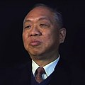 |
Shing-Tung Yau | “for his development of non-linear techniques in differential geometry leading the solution of several outstanding problems” | |||
| 1995 | Geosciences | — | Willi Dansgaard | “for their fundamental work on developing and applying isotope geological analysis methods for the study of climatic variations during the Quaternary period” | [4] [19] |
| — | Nicholas Shackleton | ||||
| 1996 | Biosciences | 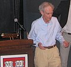 |
Robert May | “for his pioneering ecological research concerning theoretical analysis of the dynamics of populations, communities and ecosystems” | [4] [20] |
| 1997 | Astronomy | 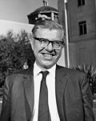 |
Fred Hoyle | “for their pioneering contributions to the study of nuclear processes in stars and stellar evolution” | [4] [21] |
| — | Edwin Ernest Salpeter | ||||
| 1998 | Geosciences | 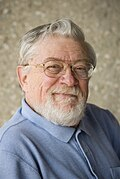 |
Don L. Anderson | “for their fundamental contributions to our knowledge of the structures and processes in the interior of the Earth” | [4] [22] |
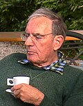 |
Adam M. Dziewonski | ||||
| 1999 | Biosciences | .jpg)
|
Ernst Mayr | “for their fundamental contributions to the conceptual development of evolutionary biology” | [4] [23] |
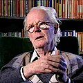 |
John Maynard Smith | ||||
| — | George Christopher Williams | ||||
| 2000 | Polyarthritis | — | Marc Feldmann | “for their definition of TNF-alpha as a therapeutic target in rheumatoid arthritis” | [4] [24] |

|
Ravinder N. Maini | ||||
| 2001 | Mathematics | 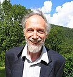 |
Alain Connes | “for his penetrating work on the theory of operator algebras and for having been a founder of non-commutative geometry” | [4] [25] |
| 2002 | Geosciences | — | Dan McKenzie | “for fundamental contributions to the understanding of the dynamics of the lithosphere, particularly plate tectonics, sedimentary basin formation and mantle melting” | [4] [26] |
| 2003 | Biosciences | 
|
Carl Woese | “for his discovery of a third domain of life” | [4] [27] |
| 2004 | Polyarthritis | — | Eugene C. Butcher | “for their studies of the molecular mechanisms involved in migration of white blood cells in health and disease” | [4] [28] |
| — | Timothy A. Springer | ||||
| 2005 | Astronomy | .jpg)
|
James E. Gunn | “for contributions towards understanding the large-scale structure of the Universe” | [4] [29] |
.jpg)
|
James Peebles | ||||
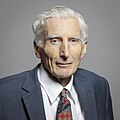 |
Martin Rees | ||||
| 2006 | Geosciences | 
|
Wallace Smith Broecker | “for his innovative and pioneering research on the operation of the global carbon cycle within the ocean atmosphere-biosphere system, and its interaction with climate” | [4] [30] |
| 2007 | Biosciences | — | Robert Trivers | “for his fundamental analysis of social evolution, conflict and cooperation” | [4] [31] |
| 2008 | Astronomy | 
|
Rashid Alievich Sunyaev | “for his decisive contributions to high energy astrophysics and cosmology, in particular processes and dynamics around black holes and neutron stars and demonstration of the diagnostic power of structures in the background radiation” | [4] [32] |
| Mathematics | .jpg)
|
Maxim Kontsevich | “for their important contributions to mathematics inspired by modern theoretical physics” | ||

|
Edward Witten | ||||
| 2009 | Polyarthritis | 
|
Charles Dinarello | “for their pioneering work to isolate interleukins, determine their properties and explore their role in the onset of inflammatory diseases” | [4] [33] |
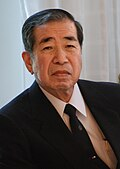 |
Tadamitsu Kishimoto | ||||
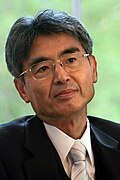 |
Toshio Hirano | ||||
| 2010 | Geosciences | 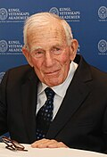 |
Walter Munk | “for his pioneering and fundamental contributions to our understanding of ocean circulation, tides and waves, and their role in the Earth’s dynamics” | [4] [34] |
| 2011 | Biosciences | 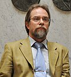 |
Ilkka Hanski | "for his pioneering studies on how spatial variation affects the dynamics of animal and plant populations" | [4] [35] |
| 2012 | Astronomy | 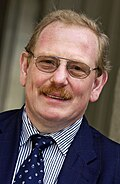 |
Reinhard Genzel | "for their observations of the stars orbiting the galactic centre, indicating the presence of a supermassive black hole" | [4] [36] |
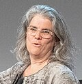 |
Andrea M. Ghez | ||||
| Mathematics | 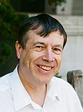 |
Jean Bourgain | "for their brilliant and groundbreaking work in harmonic analysis, partial differential equations, ergodic theory, number theory, combinatorics, functional analysis and theoretical computer science" | ||

|
Terence Tao | ||||
| 2013 | Polyarthritis | 
|
Peter K. Gregersen | "for their discoveries concerning the role of different genetic factors and their interactions with environmental factors in the pathogenesis, diagnosis and clinical management of rheumatoid arthritis" | [3] [4] |

|
Lars Klareskog | ||||
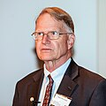 |
Robert J. Winchester | ||||
| 2014 | Geosciences | — | Peter Molnar | "for his ground-breaking contribution to the understanding of global tectonics, in particular the deformation of continents and the structure and evolution of mountain ranges, as well as the impact of tectonic processes on ocean-atmosphere circulation and climate" | [4] [37] |
| 2015 | Biosciences | — | Richard Lewontin | "for their pioneering analyses and fundamental contributions to the understanding of genetic polymorphism" | [4] [38] |
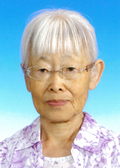 |
Tomoko Ohta | ||||
| 2016 | Astronomy | 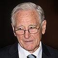 |
Roy Kerr | "for fundamental work concerning rotating black holes and their astrophysical consequences" | [4] [39] |
.jpg)
|
Roger Blandford | ||||
| Mathematics | 
|
Yakov Eliashberg | "for the development of contact and symplectic topology and groundbreaking discoveries of rigidity and flexibility phenomena" | ||
| 2017 | Polyarthritis | 
|
Shimon Sakaguchi | "for their discoveries relating to regulatory T cells, which counteract harmful immune reactions in arthritis and other autoimmune diseases" | [4] [40] |
| Fred Ramsdell | |||||
.jpg)
|
Alexander Rudensky | ||||
| 2018 | Geosciences | 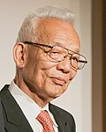 |
Syukuro Manabe | "for fundamental contributions to understanding the role of atmospheric trace gases in Earth’s climate system" | [4] [41] |
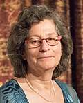 |
Susan Solomon | ||||
| 2019 | Biosciences | 
|
Sallie W. Chisholm | "for the discovery and pioneering studies of the most abundant photosynthesising organism on Earth, Prochlorococcus" | [4] [42] |
| 2020 | Astronomy | _(portrait).jpg)
|
Eugene N. Parker | "for pioneering and fundamental studies of the solar wind and magnetic fields from stellar to galactic scales" | [4] [43] |
| Mathematics | 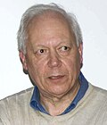 |
Enrico Bombieri | "for outstanding and influential contributions in all the major areas of mathematics, particularly number theory, analysis and algebraic geometry" | ||
| 2021 | Polyarthritis | .jpg)
|
Daniel L. Kastner | "for establishing the concept of autoinflammatory diseases" | [4] [44] |
| 2022 | Geosciences | Andrew H. Knoll | "for fundamental contributions to our understanding of the first three billion years of life on Earth and life’s interactions with the physical environment through time" | [4] [45] | |
| 2023 | Biosciences | — | Dolph Schluter | "for fundamental contributions to the understanding of adaptive radiation and ecological speciation" | [4] [46] |
| 2024 | Astronomy | — | Douglas Gough | "for developing the methods of asteroseismology and their application to the study of the interior of the Sun and of other stars" | [4] [47] |

|
Jørgen Christensen-Dalsgaard | ||||

|
Conny Aerts | ||||
| Mathematics | 
|
Claire Voisin | "for outstanding contributions to complex and algebraic geometry, including Hodge theory, algebraic cycles, and hyperkähler geometry" | ||
| 2025 | Polyarthritis | — | Christopher Goodnow | "for the discovery of fundamental mechanisms for B cell tolerance." | [48] |
| — | David Nemazee | ||||
| 2026 | Geosciences | — | Veerabhadran Ramanathan | "for fundamental contributions to our understanding of how aerosol particles and other climate pollutants influence the atmospheric energy balance and the Earth system." | [49] |
{kind=link}
{kind=link}
{kind=link}
{kind=link}
_(cropped).jpg){kind=link}
.jpg){kind=link}
.jpg){kind=link}
_(cropped).jpg){kind=link}
{kind=link}
{kind=link}
{kind=link}
.jpg){kind=link}
{kind=link}
{kind=link}
{kind=link}
{kind=link}
{kind=link}
{kind=link}
.jpg){kind=link}
{kind=link}
{kind=link}
{kind=link}
{kind=link}
{kind=link}
{kind=link}
{kind=link}
{kind=link}
.jpg){kind=link}
.jpg){kind=link}
{kind=link}
{kind=link}
{kind=link}
.jpg){kind=link}
.jpg){kind=link}
{kind=link}
.jpg){kind=link}
Notes
See also
- List of general science and technology awards
- List of prizes known as the Nobel or the highest honors of a field#Geosciences, agricultural sciences and environmental sciences
- Prizes named after people
References
- ^ a b c d e "The Crafoord Prize". Crafoord Prize. Anna-Greta and Holger Crafoord Fund. Archived from the original on 17 August 2024. Retrieved 1 November 2024.
- ^ a b c d e "About the Crafoord Prize". Royal Swedish Academy of Sciences. Archived from the original on 14 April 2024. Retrieved 21 July 2024.
- ^ a b Wollheim 2014.
- ^ a b c d e f g h i j k l m n o p q r s t u v w x y z aa ab ac ad ae af ag ah ai aj ak al am an ao ap aq "The Crafoord Prize 1982–2024" (PDF). Crafoord Prize. Anna-Greta and Holger Crafoord Fund. Archived (PDF) from the original on 18 May 2024. Retrieved 1 November 2024.
- ^ Schmeck Jr., Harold M. (27 June 1982). "American and Russian Share Prize in Mathematics". The New York Times. Archived from the original on 25 March 2023. Retrieved 12 November 2015.
- ^ Bolin 1984.
- ^ "Penn prof wins ecology prize". Pittsburgh Press. 2 October 1984. p. A2. Retrieved 2 November 2024 – via Newspapers.com.
- ^ Gahm 1985.
- ^ Elsevier 1987.
- ^ "UF Professor wins top science prize". Miami Herald. Gainesville. 19 September 1987. p. 16A. Retrieved 2 November 2024 – via Newspapers.com.
- ^ a b Dickson 1988.
- ^ "Sweden honors Van Allen for work". Iowa City Press-Citizen. Associated Press. 28 September 1989. p. 1B. Retrieved 3 November 2024 – via Newspapers.com.
- ^ Galloway, Paul (16 March 1990). "Giant of the ant world". Chicago Tribune. Section 5 (Tempo). p. 1. Retrieved 3 November 2024 – via Newspapers.com.
- ^ "People: Two Population Biologists Share $240,000 1990 Swedish Crafoord Prize". The Scientist. 1 April 1990. Archived from the original on 16 July 2024. Retrieved 3 November 2024.
- ^ Elvius 1992.
- ^ "Crafoord Prize goes for research on evolution". The Cincinnati Enquirer. 2 October 1992. p. A9. Retrieved 3 November 2024 – via Newspapers.com.
- ^ Dickson 1993.
- ^ Brozan, Nadine (18 January 1994). "Chronicle". The New York Times. p. 5B. Archived from the original on 23 April 2024. Retrieved 3 November 2024.
- ^ Dickson 1995.
- ^ Levin 1996.
- ^ Science 1997.
- ^ Science 1998.
- ^ Blair, Cynthia (28 February 1999). "In Brief; Two Island Scientists To Receive Honors". The New York Times. Archived from the original on 24 November 2022. Retrieved 5 November 2024.
- ^ "The Crafoord Prize 2000". Crafoord Prize (Press release). Anna-Greta and Holger Crafoord Fund. 13 January 2000. Archived from the original on 21 May 2024. Retrieved 5 November 2024.
- ^ Science 2001.
- ^ Physics Today 2002.
- ^ "U. of I. professor wins Crafoord Prize". Chicago Tribune. 21 August 2021. Archived from the original on 5 November 2024. Retrieved 12 November 2015.
- ^ "The Crafoord Prize in Polyarthritis 2004". Crafoord Prize (Press release). Anna-Greta and Holger Crafoord Fund. 29 January 2004. Archived from the original on 21 May 2024. Retrieved 31 January 2024.
- ^ "Cosmologists win Crafoord award". Physics World. IOP Publishing. 27 January 2005. Archived from the original on 6 November 2024. Retrieved 3 November 2024.
- ^ Kaplan 2007.
- ^ "American scientists win Crafoord prize". NBC News. Associated Press. 18 January 2007. Archived from the original on 15 May 2021. Retrieved 6 November 2024.
- ^ Johnston, Hamish (18 January 2008). "String theorists and astrophysicist share Crafoord Prize". Physics World. IOP Publishing. Archived from the original on 6 November 2024. Retrieved 3 November 2024.
- ^ "The Crafoord Prize in Polyarthritis 2009". Crafoord Prize (Press release). Anna-Greta and Holger Crafoord Fund. 15 January 2009. Archived from the original on 19 June 2024. Retrieved 1 February 2021.
- ^ Nilsson & Lejenäs 2011.
- ^ "The Crafoord Prize in Biosciences 2011". Crafoord Prize (Press release). Anna-Greta and Holger Crafoord Fund. 20 January 2011. Archived from the original on 4 March 2024. Retrieved 1 February 2021.
- ^ MacKenzie, Dana (19 January 2022). "Crafoord Prizes Announced". ScienceInsider. Archived from the original on 5 November 2024. Retrieved 5 November 2022.
- ^ "The Crafoord Prize in Geosciences 2014". Crafoord Prize (Press release). Anna-Greta and Holger Crafoord Fund. 16 January 2014. Archived from the original on 5 July 2024. Retrieved 3 February 2023.
- ^ "The Crafoord Prize in Biosciences 2015". Crafoord Prize (Press release). Anna-Greta and Holger Crafoord Fund. 15 January 2015. Archived from the original on 19 August 2024. Retrieved 3 February 2023.
- ^ "The Crafoord Prizes in Mathematics and Astronomy 2016". Crafoord Prize (Press release). Anna-Greta and Holger Crafoord Fund. 14 January 2016. Archived from the original on 17 August 2024. Retrieved 6 November 2024.
- ^ Wollheim 2018.
- ^ "Two legendary climate researchers receive this year's Crafoord Prize". Crafoord Prize (Press release). Anna-Greta and Holger Crafoord Fund. Archived from the original on 19 June 2024. Retrieved 6 November 2024.
- ^ "The Crafoord Prizes in Biosciences 2019". Crafoord Prize (Press release). Anna-Greta and Holger Crafoord Fund. 17 January 2019. Archived from the original on 30 May 2024. Retrieved 6 November 2024.
- ^ "The Crafoord Prizes in Mathematics and Astronomy 2020". Crafoord Prize (Press release). Anna-Greta and Holger Crafoord Fund. 30 January 2020. Archived from the original on 11 September 2024. Retrieved 6 November 2024.
- ^ "The Crafoord Prize in Polyarthritis 2021". Crafoord Prize. Anna-Greta and Holger Crafoord Fund. 31 January 2021. Archived from the original on 15 August 2023. Retrieved 1 February 2021.
- ^ "The Crafoord Prize in Geosciences 2022". Crafoord Prize. Anna-Greta and Holger Crafoord Fund. 30 January 2022. Archived from the original on 8 April 2022. Retrieved 31 January 2022.
- ^ "Studies of how new species arise are rewarded with the Crafoord Prize". Crafoord Prize (Press release). Anna-Greta and Holger Crafoord Fund. 30 January 2023. Archived from the original on 15 August 2023. Retrieved 31 January 2023.
- ^ "This year's Crafoord Laureates can see inside stars and describe geometric shapes". Crafoord Prize (Press release). Anna-Greta and Holger Crafoord Fund. 30 January 2024. Archived from the original on 2 February 2024. Retrieved 31 January 2024.
- ^ "Crafoord Prize Laureates discovered mechanisms that prevent autoimmune disease". Crafoord Prize (Press release). Anna-Greta and Holger Crafoord Fund. 30 January 2025. Archived from the original on 30 January 2025. Retrieved 30 January 2025.
- ^ "Crafoord Prize Laureate showed that many factors affect the climate". Crafoord Prize (Press release). Anna-Greta and Holger Crafoord Fund. 29 January 2026. Archived from the original on 26 March 2026. Retrieved 14 April 2026.
Sources
- "The 1986 Crafoord Prize to Claude Jean Allègre and Gerald Joseph Wasserburg". Earth and Planetary Science Letters. 86 (2–4). Elsevier: 127–128. December 1987. Bibcode:1987E&PSL..86..127.. doi:10.1016/0012-821X(87)90218-4.
- "Astrophysicists Win Crafoord Prize". Science. 276 (5318): 1505. 6 June 1997. doi:10.1126/science.276.5318.1505b.
- "Earth's Deep Thinkers Win Crafoord Prize". Science. 280 (5365): 831. 8 May 1998. doi:10.1126/science.280.5365.831c.
- "French Mathematician Wins Crafoord Prize". Science. 291 (5505): 823. 2 February 2001. doi:10.1126/science.291.5505.823b.
- "McKenzie Wins Crafoord Prize". Physics Today. 55 (5): 76. 1 May 2002. Bibcode:2002PhT....55Q..76.. doi:10.1063/1.1485594.
- Bolin, Bert (1984). "The 1983 Crafoord Prize Awarded to Edward N. Lorenz and Henry Stommel". Tellus A: Dynamic Meteorology and Oceanography. 36 (2): 97. Bibcode:1984TellA..36...97B. doi:10.3402/tellusa.v36i2.11472.
- Dickson, David (13 May 1988). "Crafoord Prize Winner Abstains". Science. 240 (4854): 876. Bibcode:1988Sci...240..876D. doi:10.1126/science.240.4854.876. PMID 17783442.
- Dickson, David (25 March 1993). "Geneticists win Crafoord Prize". Nature. 362 (6418): 277. Bibcode:1993Natur.362..277D. doi:10.1038/362277c0. PMID 8455702.
- Dickson, David (4 May 1995). "Briton and Dane share Crafoord prize". Nature. 375 (6526): 3. Bibcode:1995Natur.375....3D. doi:10.1038/375003c0.
- Elvius, Aina (1992). "The Crafoord Prize 1991 in Astronomy to Dr Allan R Sandage". Physica Scripta. 1992 (5). IOP Publishing: 5–6. doi:10.1088/0031-8949/1992/T43/001.
- Gahm, Gösta (1985). "The Crafoord Prize 1985 in Astronomy to Professor Lyman Spitzer Jr". Physica Scripta. 11. IOP Publishing: 3–4. Bibcode:1985PhST...11....3G. doi:10.1088/0031-8949/1985/T11/001. S2CID 250781983.
- Kaplan, Karen H. (1 April 2007). "Broecker to receive 2006 Crafoord prize" (PDF). Physics Today. 60 (4): 74. Bibcode:2007PhT....60Q..74K. doi:10.1063/1.2731982.
- Levin, Simon A. (September 1996). "Robert May Receives Crafoord Prize" (PDF). Notices of the American Mathematical Society. 43 (9): 977–978.
- Nilsson, Johann; Lejenäs, Harald (2011). "The 2010 Crafoord Prize awarded to Walter Munk". Tellus A: Dynamic Meteorology and Oceanography. 63 (2): 189. Bibcode:2011TellA..63..189N. doi:10.1111/j.1600-0870.2010.00495.x.
- Wollheim, Frank A. (April 2014). "The Crafoord Prize in polyarthritis 2013". Rheumatology. 53 (4): 581–582. doi:10.1093/rheumatology/ket285. PMID 23970543.
- Wollheim, Frank A. (2018). "T-regulatory cells-Triumph of perseverance: The Crafoord Prize for Polyarthritis in 2017". Seminars in Arthritis and Rheumatism. 47 (4): 601–603. doi:10.1016/j.semarthrit.2017.08.010. PMID 29037524.
External links
- Official website
- Full list of laureates on the Crafoord Prize website
- Crafoord Prize at the Royal Swedish Academy of Sciences website